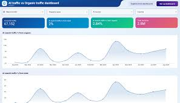

Application mobile de suivi de fitness

Ce projet est une application mobile de suivi de fitness développée avec React Native. Elle permet aux utilisateurs de suivre leurs activités physiques, de définir des objectifs de fitness et d'analyser leurs progrès. L'application offre une interface conviviale et des fonctionnalités telles que le suivi des pas, la surveillance du rythme cardiaque et l'intégration avec des appareils de fitness.
Technologies utilisées :
- React Native
- JavaScript
- API de santé mobile